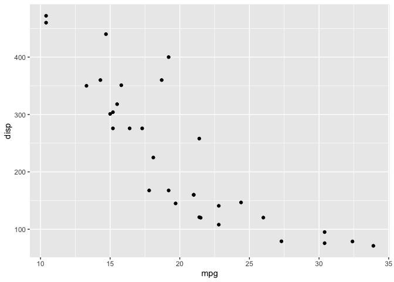
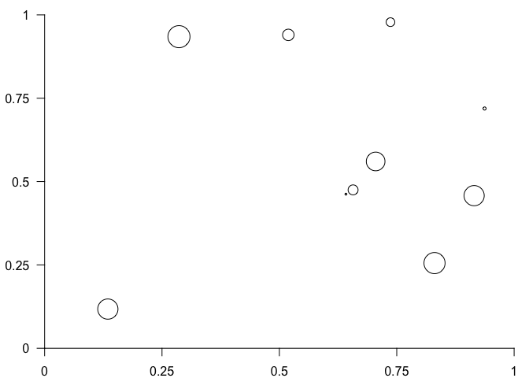

A layout engine built on top of grid for arranging graphical objects (grobs) in a table-based grid. Grobs can span multiple rows and columns, and gtable objects can be nested, enabling complex automatically-arranging layouts.
This repository contains both the original R package (r-lib/gtable) and a faithful Python reimplementation (gtable-r2py).
Python (gtable-r2py)
Example: build a plot layout from scratch
This is the Python equivalent of the R example at the bottom of this README — building a scatter plot with axes using low-level grid primitives:
from grid_r2py import Unit, PointsGrob, XAxisGrob, YAxisGrob, grid_draw
import random
from gtable_r2py import gtable, gtable_add_grob
# Construct some graphical elements using grid
points = PointsGrob(
x=[random.random() for _ in range(10)],
y=[random.random() for _ in range(10)],
size=Unit([random.random() for _ in range(10)], "cm"),
)
xaxis = XAxisGrob(at=[0, 0.25, 0.5, 0.75, 1])
yaxis = YAxisGrob(at=[0, 0.25, 0.5, 0.75, 1])
# Setup the gtable layout
plot = gtable(
widths=Unit([1.5, 0, 1, 0.5], ["cm", "cm", "null", "cm"]),
heights=Unit([0.5, 1, 0, 1], ["cm", "null", "cm", "cm"]),
)
# Add the grobs
gtable_add_grob(
plot,
grobs=[points, xaxis, yaxis],
t=[2, 3, 2],
l=[3, 3, 2],
clip="off",
)
# Draw
grid_draw(plot)Example: combine multiple tables
from grid_r2py import Unit, RectGrob, CircleGrob
from gtable_r2py import gtable_col, gtable_cbind, gtable_add_padding
# Create two single-column tables
left = gtable_col("left", [RectGrob(name="a"), RectGrob(name="b")])
right = gtable_col("right", [CircleGrob(name="c"), CircleGrob(name="d")])
# Join horizontally and add padding
combined = gtable_cbind(left, right)
gtable_add_padding(combined, Unit(0.5, "cm"))
combined
# TableGrob (4 x 4) 'left': 4 grobsFull API documentation
See docs/python/README.md for the complete API reference, all GTable methods, subsetting, and the comparison with R’s gtable.
R (gtable)
Installation
Install from CRAN:
install.packages("gtable")Or the development version from GitHub:
# install.packages("pak")
pak::pak("r-lib/gtable")Example
ggplot2 uses gtable for laying out plots, and it is possible to access the gtable representation of a plot for inspection and modification:
library(gtable)
library(ggplot2)
p <- ggplot(mtcars, aes(mpg, disp)) + geom_point()
p_table <- ggplotGrob(p)
p_table
#> TableGrob (16 x 13) "layout": 22 grobs
#> z cells name grob
#> 1 0 ( 1-16, 1-13) background rect[plot.background..rect.38]
#> 2 5 ( 8- 8, 6- 6) spacer zeroGrob[NULL]
#> 3 7 ( 9- 9, 6- 6) axis-l absoluteGrob[GRID.absoluteGrob.26]
#> 4 3 (10-10, 6- 6) spacer zeroGrob[NULL]
#> 5 6 ( 8- 8, 7- 7) axis-t zeroGrob[NULL]
#> 6 1 ( 9- 9, 7- 7) panel gTree[panel-1.gTree.17]
#> 7 9 (10-10, 7- 7) axis-b absoluteGrob[GRID.absoluteGrob.22]
#> 8 4 ( 8- 8, 8- 8) spacer zeroGrob[NULL]
#> 9 8 ( 9- 9, 8- 8) axis-r zeroGrob[NULL]
#> 10 2 (10-10, 8- 8) spacer zeroGrob[NULL]
#> 11 10 ( 7- 7, 7- 7) xlab-t zeroGrob[NULL]
#> 12 11 (11-11, 7- 7) xlab-b titleGrob[axis.title.x.bottom..titleGrob.30]
#> 13 12 ( 9- 9, 5- 5) ylab-l titleGrob[axis.title.y.left..titleGrob.33]
#> 14 13 ( 9- 9, 9- 9) ylab-r zeroGrob[NULL]
#> 15 14 ( 9- 9,11-11) guide-box-right zeroGrob[NULL]
#> 16 15 ( 9- 9, 3- 3) guide-box-left zeroGrob[NULL]
#> 17 16 (13-13, 7- 7) guide-box-bottom zeroGrob[NULL]
#> 18 17 ( 5- 5, 7- 7) guide-box-top zeroGrob[NULL]
#> 19 18 ( 9- 9, 7- 7) guide-box-inside zeroGrob[NULL]
#> 20 19 ( 4- 4, 7- 7) subtitle zeroGrob[plot.subtitle..zeroGrob.35]
#> 21 20 ( 3- 3, 7- 7) title zeroGrob[plot.title..zeroGrob.34]
#> 22 21 (14-14, 7- 7) caption zeroGrob[plot.caption..zeroGrob.36]A gtable object is a collection of graphic elements along with their placement in the grid and the dimensions of the grid itself. Graphic elements can span multiple rows and columns in the grid and be gtables themselves allowing for very complex automatically arranging layouts.
A gtable object is itself a grob, and can thus be drawn using standard functions from the grid package:

While most people will interact with gtable through ggplot2, it is possible to build a plot from the ground up.
# Construct some graphical elements using grid
points <- pointsGrob(
x = runif(10),
y = runif(10),
size = unit(runif(10), 'cm')
)
xaxis <- xaxisGrob(at = c(0, 0.25, 0.5, 0.75, 1))
yaxis <- yaxisGrob(at = c(0, 0.25, 0.5, 0.75, 1))
# Setup the gtable layout
plot <- gtable(
widths = unit(c(1.5, 0, 1, 0.5), c('cm', 'cm', 'null', 'cm')),
heights = unit(c(0.5, 1, 0, 1), c('cm', 'null', 'cm', 'cm'))
)
# Add the grobs
plot <- gtable_add_grob(
plot,
grobs = list(points, xaxis, yaxis),
t = c(2, 3, 2),
l = c(3, 3, 2),
clip = 'off'
)
# Plot
grid.draw(plot)